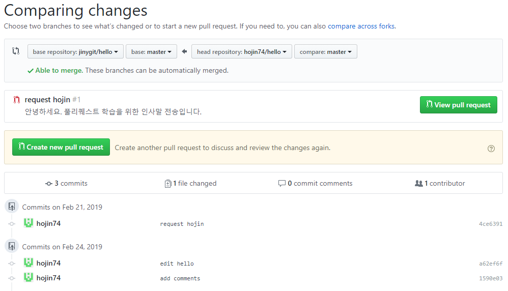
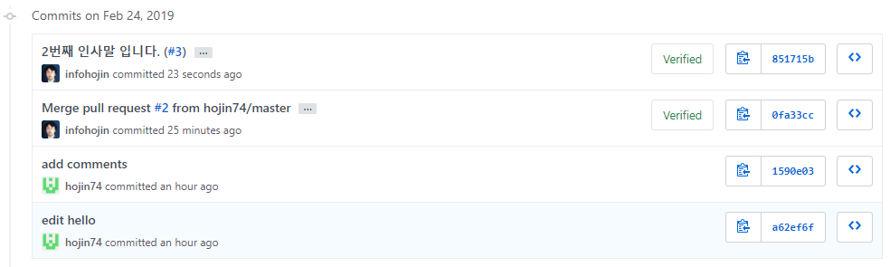

이번에는 수신 측면을 알아봅니다. 프로젝트의 관리자가 되면 풀-리퀘스트의 수신을 확인할 수 있습니다. 풀-리퀘스트를 수신한다는 것은 오픈 프로젝트를 진행하는 구성원 또는 소유자일 것입니다.
메인 프로젝트의 저장소로 접속합니다. 상단에 pull request 탭이 있습니다. 기여자로부터 요청받은 풀-리퀘스트를 확인할 수 있습니다.

Pull request 화면을 보면 오픈되어 있는 목록들을 확인해볼 수 있습니다.
목록에서 풀 리퀘스트 항목을 클릭하면 상세한 정보를 확인할 수 있습니다. 누가 요청한 것인지, 어느 브랜치로부터 파생된 것인지 등을 확인할 수 있습니다.
깃허브 URL을 이용하여 확인할 수 있습니다. 풀-리퀘스트가 생성되면 같이 이슈 번호도 추가됩니다.

이슈 번호를 이용하여 다음과 같이 URL 주소로 접근이 가능합니다.
http://github.com/사용자아이디/저정소이름/pull/번호
만일 요청된 풀 리퀘스트의 변경된 내용만을 보고 싶은 경우에는 .diff를 추가합니다.
http://github.com/사용자아이디/저정소이름/pull/번호.diff
또는 diff 내용만을 페치 형태의 파일로도 받을 수 있습니다.
http://github.com/사용자아이디/저정소이름/pull/번호.patch
Conversation 탭을 선택하면 풀 리퀘스트에 대한 대화와 커밋들에 대한 이력을 확인할 수 있습니다.

풀 리퀘스트를 반영하기 위해서는 개발자와 관리자 간의 충분한 대화와 테스트가 필요합니다.
대화 도중에 다른 사람의 말을 인용할 수도 있습니다. 인용하고자 하는 메시지를 마우스로 드래그하여 선택합니다.
단축키 R을 선택하면 해당 메시지가 인용되어 자동으로 삽입됩니다.
commit 탭을 선택하면 풀-리퀘스트와 관련된 커밋들이 시간순으로 출력됩니다. 옆에 있는 숫자는 커밋의 횟수를 의미합니다.

풀 리퀘스트 요청으로 변경된 파일들을 확인할 수 있습니다.

수정된 코드 부분으로 마우스를 이동하면 + 기호를 사용해 해당 코드 부분에 대한 의견을 추가로 달 수 있습니다.
이 기능은 코드를 리뷰하면서 세부적인 소견을 작성하는 데 매우 유용합니다.
요청한 풀-리퀘스트에 오류가 있거나 병합이 적절하지 않는 경우에는 거절할 수도 있습니다.

거절 사유를 입력하고 [Reopen pull request]를 입력합니다. 거절하면 풀-리퀘스트는 종료됩니다.

메인 프로젝트 저장소의 풀-리퀘스트에서 거절 사유를 확인할 수 있습니다. 종료된 풀-리퀘스트도 저장소의 pull-request 탭에서 확인할 수 있습니다.

만일 기여자가 새로운 코드를 보완했다면 종료된 풀-리퀘스트에서 추가로 확인이 가능합니다.
종료된 이전의 기록으로 접속하면 새로운 코드를 보완하여 커밋과 푸시가 있다는 정보를 같이 출력합니다.
New changes since you last view 목록이 더 추가된 것을 확인할 수 있습니다.

담당자는 Reopen full-request를 클릭하여 다시 풀-리퀘스트를 활성화할 수 있습니다.
자신의 풀-리퀘스트가 거절될 경우 이를 보완하여 다시 풀-리퀘스트를 요청할 수 있습니다. 코드를 좀 더 보완하여 포크 저장소에 푸시합니다.
# pull-request 인사를 하세요.
## 첫번째 기여자 hojin입니다.
안녕하세요 이호진입니다. jinygit/hello를 포크하여 인사를 드립니다.
infoh@hojin1 MINGW64 /e/jinygit/hello_fork (master)
$ git commit -am "edit hello"
[master a62ef6f] edit hello
1 file changed, 1 insertion(+), 1 deletion(-)
이렇게 풀-리퀘스트 실습과, 처음 기여를 하게되어 기쁩니다.
infoh@hojin1 MINGW64 /e/jinygit/hello_fork (master)
$ git commit -am "add comments"
[master 1590e03] add comments
1 file changed, 2 insertions(+), 1 deletion(-)
infoh@hojin1 MINGW64 /e/jinygit/hello_fork (master)
$ git push
Enter passphrase for key '/c/Users/infoh/.ssh/id_rsa2':
Enumerating objects: 8, done.
Counting objects: 100% (8/8), done.
Delta compression using up to 8 threads
Compressing objects: 100% (4/4), done.
Writing objects: 100% (6/6), 582 bytes | 194.00 KiB/s, done.
Total 6 (delta 2), reused 0 (delta 0)
remote: Resolving deltas: 100% (2/2), completed with 1 local object.
To github.com-2:hojin74/hello.git
1590e03..9542215 master -> master
다시 New pull request 버튼을 클릭합니다. 새로운 풀-리퀘스트를 신청할 수 있습니다.
또한, 이전에 종료된 요청 기록을 확인할 수 있습니다.

리퀘스트는 반드시 테스트한 후에 승인해주는 것이 좋습니다. 오류가 있거나 코드 충돌이 발생할 수도 있습니다. 또는 자동 테스트 툴을 이용할 수도 있습니다.

화면에서 Merge pull request 버튼을 클릭하면 요청된 리퀘스트가 코드와 병합됩니다.
또는 버튼 옆에 작은 화살표 버튼이 있습니다.
이를 클릭하면 3종류의 병합을 선택하여 풀-리퀘스트 병합 형태를 변경할 수 있습니다.

3가지 병합 방식에 대해서 하나씩 알아보겠습니다.
포크 저장소를 브랜치 형태로 병합합니다. 커밋 메시지를 작성하고 Confirm merge를 클릭하면 병합이 이루어집니다.

요청한 풀-리퀘스트의 병합을 승낙합니다.
Create a merge commit은 병합 시 이루어지는 모든 커밋에 대해 하나씩 병합을 수행합니다.
만일 포크 저장소에 추가로 작성된 커밋이 3개가 있을 경우 이를 각각 메인 저장소의 커밋으로 추가합니다.
메인 저장소로 이동하여 자신이 기여한 커밋을 확인해봅니다.

승낙된 풀-리퀘스트는 pull-request 탭에서 확인이 가능합니다. 풀-리퀘스트승낙이 되면 자동으로 종료(close)되기 때문에 close 부분을 체크해야 목록을 확인할 수 있습니다.

자신의 코드가 정상적으로 기여하게 되면 원본 저장소의 기여자(contributor)로 등록됩니다.

병합되는 여러 개의 커밋 메시지를 1개의 커밋 메시지로 병합합니다. 실습을 통하여 이를 확인해봅니다. 포크 저장소의 인사말을 수정해서 3번째 풀-리퀘스트를 전송합니다.
## 두번째 Squash 리퀘스트
infoh@hojin1 MINGW64 /e/jinygit/hello_fork (master)
$ git commit -am "second commit"
[master d4e495c] second commit
1 file changed, 2 insertions(+), 1 deletion(-)
Squash and merge 풀-리퀘스트 실습을 위한 두번째 인사말 커밋입니다.
infoh@hojin1 MINGW64 /e/jinygit/hello_fork (master)
$ git commit -am "squash request"
[master 9542215] squash request
1 file changed, 2 insertions(+), 1 deletion(-)
infoh@hojin1 MINGW64 /e/jinygit/hello_fork (master)
$ git push
Enter passphrase for key '/c/Users/infoh/.ssh/id_rsa2':
Enumerating objects: 8, done.
Counting objects: 100% (8/8), done.
Delta compression using up to 8 threads
Compressing objects: 100% (4/4), done.
Writing objects: 100% (6/6), 582 bytes | 194.00 KiB/s, done.
Total 6 (delta 2), reused 0 (delta 0)
remote: Resolving deltas: 100% (2/2), completed with 1 local object.
To github.com-2:hojin74/hello.git
1590e03..9542215 master -> master
수정한 인사말을 다시 새로운 풀-리퀘스트로 요청합니다.
2번째 인사말은 Squash and merge 방식으로 병합을 승인합니다.

풀-리퀘스트 커밋 메시지로 포크 저장소의 커밋들의 메시지가 자동으로 들어가는 것을 확인할 수 있습니다.

이전 Create a merge commit 방법과 달리 병합되는 2개의 커밋이 하나의 커밋으로 풀-리퀘스트 병합을 하게 됩니다.
Squash 병합 승인은 포크저장소의 커밋들을 나열할 필요가 없는 경우 유용합니다.
이전의 Create a merge commit과 Squash and merge는 포크 저장소를 브랜치 형태로 병합을 처리합니다.
깃은 브랜치를 병합하는 방법으로 크게 3-way 방법과 리베이스(rebase) 방법이 있습니다.
Rebase and merge는 풀-리퀘스트를 리베이스 방법으로 승인합니다.
실습을 위해 포크 저장소의 코드를 수정해봅니다.
## 세번째 rebase 리퀘스트
infoh@hojin1 MINGW64 /e/jinygit/hello_fork (master)
$ git commit -am "third commit"
[master f3d6339] third commit
1 file changed, 2 insertions(+), 1 deletion(-)
rebase and merge 풀-리퀘스트 실습을 위한 두번째 인사말 커밋입니다.
infoh@hojin1 MINGW64 /e/jinygit/hello_fork (master)
$ git commit -am "rebase request"
[master 2c4b5ec] rebase request
1 file changed, 2 insertions(+), 1 deletion(-)
infoh@hojin1 MINGW64 /e/jinygit/hello_fork (master)
$ git push
Enter passphrase for key '/c/Users/infoh/.ssh/id_rsa2':
Enumerating objects: 8, done.
Counting objects: 100% (8/8), done.
Delta compression using up to 8 threads
Compressing objects: 100% (4/4), done.
Writing objects: 100% (6/6), 520 bytes | 173.00 KiB/s, done.
Total 6 (delta 2), reused 0 (delta 0)
remote: Resolving deltas: 100% (2/2), completed with 1 local object.
To github.com-2:hojin74/hello.git
9542215..2c4b5ec master -> master
저장한 후에 새로운 풀-리퀘스트를 요청합니다. 리베이스 방식으로 풀-리퀘스트를 승인할 경우에는 커밋 메시지를 작성하지 않습니다.

풀-리퀘스트는 포크 저장소의 코드의 브랜치를 병합하는것과 동일합니다. 따라서 풀-리퀘스트도 언제든지 충돌이 발생할 수 있습니다.
충돌이 발생한 경우 깃허브는 다음과 같이 충돌이 발생한 파일과 방법을 안내합니다.

해결 방법은 Use the command line 부분을 클릭하면 알려줍니다.
문제 해결을 위해서 새로운 메인 프로젝트의 복제 저장소를 생성합니다.
infoh@hojin1 MINGW64 /e/jinygit
$ git clone https://github.com/jinygit/hello.git hello-req3
Cloning into 'hello-req3'...
remote: Enumerating objects: 16, done.
remote: Counting objects: 100% (16/16), done.
remote: Compressing objects: 100% (8/8), done.
remote: Total 16 (delta 3), reused 13 (delta 2), pack-reused 0
Unpacking objects: 100% (16/16), done.
infoh@hojin1 MINGW64 /e/jinygit
$ cd hello-req3
충돌이 발생한 원격 저장소의 코드를 가지고 옵니다.
infoh@hojin1 MINGW64 /e/jinygit/hello-req3 (master)
$ git checkout -b hojin74-master master
Switched to a new branch 'hojin74-master'
infoh@hojin1 MINGW64 /e/jinygit/hello-req3 (hojin74-master)
$ git pull https://github.com/hojin74/hello.git master
remote: Enumerating objects: 14, done.
remote: Counting objects: 100% (14/14), done.
remote: Compressing objects: 100% (4/4), done.
remote: Total 12 (delta 4), reused 12 (delta 4), pack-reused 0
Unpacking objects: 100% (12/12), done.
From https://github.com/hojin74/hello
* branch master -> FETCH_HEAD
Auto-merging README.md
CONFLICT (content): Merge conflict in README.md
Automatic merge failed; fix conflicts and then commit the result.
infoh@hojin1 MINGW64 /e/jinygit/hello-req3 (hojin74-master|MERGING)
충돌 부분을 해결하고 커밋합니다.
infoh@hojin1 MINGW64 /e/jinygit/hello-req3 (hojin74-master|MERGING)
$ git commit -am "resolve conflict"
[hojin74-master a23ce96] resolve conflict
이제 직접 수동으로 풀-리퀘스트를 진행해봅니다.
infoh@hojin1 MINGW64 /e/jinygit/hello-req3 (hojin74-master)
$ git checkout master
Switched to branch 'master'
Your branch is up to date with 'origin/master'.
마스터 브랜치로 이동한 후에, 해결된 풀-리퀘스트 브랜치를 병합합니다.
infoh@hojin1 MINGW64 /e/jinygit/hello-req3 (master)
$ git merge --no-ff hojin74-master
Merge made by the 'recursive' strategy.
README.md | 5 ++++-
1 file changed, 4 insertions(+), 1 deletion(-)
병합된 풀-리퀘스트를 원격 저장소로 푸시합니다.
infoh@hojin1 MINGW64 /e/jinygit/hello-req3 (master)
$ git push origin master
Enumerating objects: 18, done.
Counting objects: 100% (18/18), done.
Delta compression using up to 8 threads
Compressing objects: 100% (10/10), done.
Writing objects: 100% (14/14), 1.23 KiB | 157.00 KiB/s, done.
Total 14 (delta 5), reused 0 (delta 0)
remote: Resolving deltas: 100% (5/5), completed with 1 local object.
To https://github.com/jinygit/hello.git
851715b..7fd4685 master -> master
수동으로 충돌을 해결하고 메인 저장소로 푸시하면 풀-리퀘스트 상태는 merged로 변경됩니다.

수동 병합을 승인한 후에는 직접 풀-리퀘스트를 종료(close)로 변경합니다.